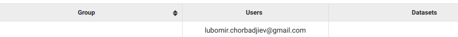

Groups¶
When a new user or dataset is created, they are automatically assigned to groups with their corresponding names.

Special Groups¶
Admin¶
Users assigned to the admin group, have all permissions. Only admin users can view or interact with other users, groups or datasets.
Anonymous¶
anonymous@seqpipe.org is a group that all unregistered users belong to. They lack permissions for accessing most of the datasets. Inaccessible datasets are shown in grey color.


Any user¶
Certain datasets are visible to every registered user. They belong to the any_user group which is automatically assigned to every account and cannot be removed.
Any dataset¶
any_dataset is a group that contains all of the available datasets. Admins are usually subscribed to this group.
Sorting groups¶
In the Groups tab on the Management menu, the groups column can be sorted by clicking on the arrows at the end of the Group column title.
By clicking on the down arrow, it allows the existing groups to be sorted alphabetically in descending order, while the up arrow sorts them in ascending order.